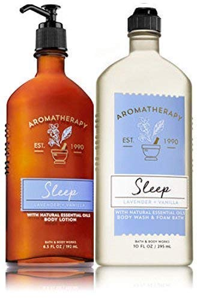
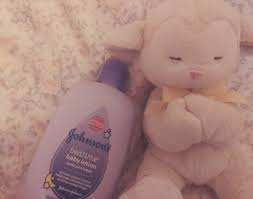
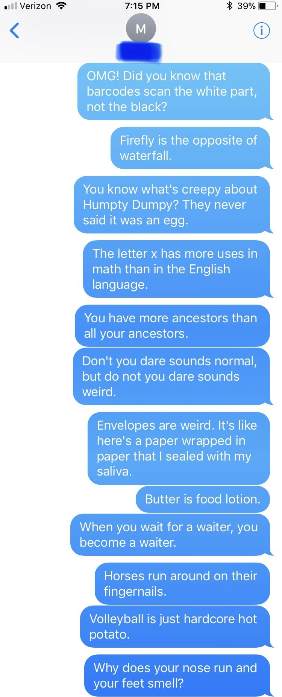

 As I walked through the yoga studio, I smelled many different types of aromas including lavender and vanilla, which are both known to promote relaxation. These ingredients make you feel more “blissful” and relaxed, which, will help you fall asleep easier.
Hopefully, I don’t fall asleep in yoga class.
When I opened the door to my yoga class, I saw a giant bottle of
LUSH's 'Sleepy Body Lotion'
 I was confused as how they even make a “sleepy lotion” and if the sleepy body lotion really works. I feel like in college I come across many sleep-deprived people, who have trouble falling asleep even when they are extremely sleepy. So I would love to see if this lotion really works the way that it says.
ALSO - I found this text image that says a bunch of weird random facts about life that we often forget about and thought I would share ☺ 